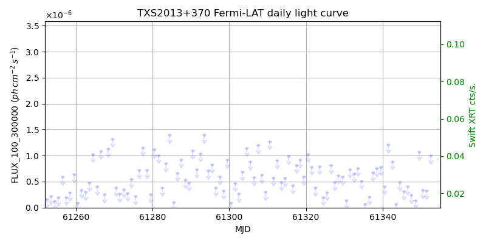
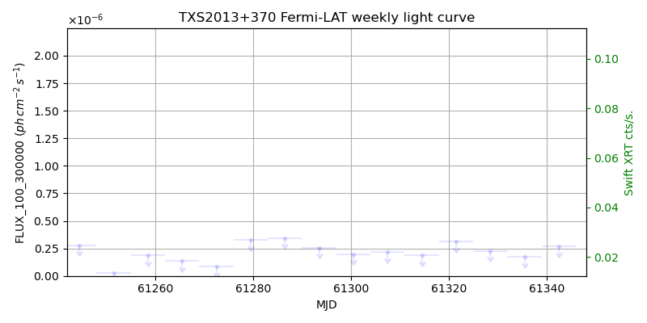
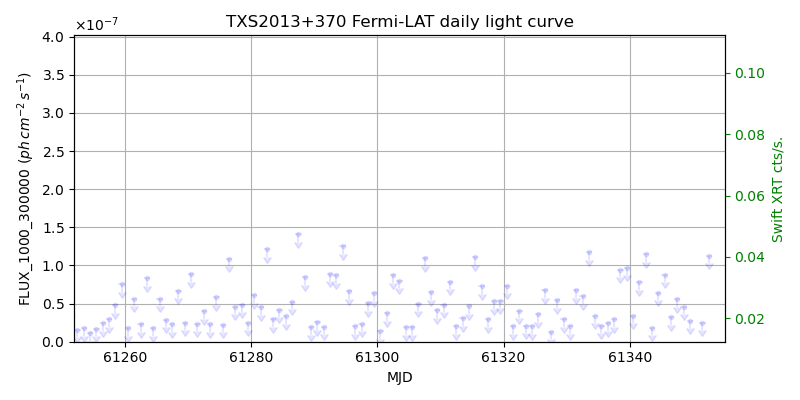
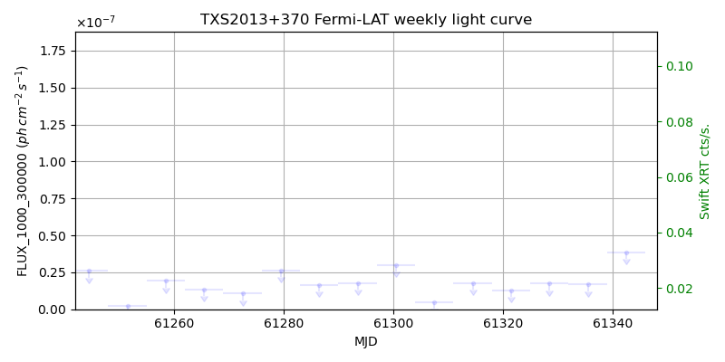

LAT Lightcurve site: https://fermi.gsfc.nasa.gov/ssc/data/access/lat/msl_lc/source/TXS_2013p370
Swift site: https://www.swift.psu.edu/monitoring/source.php?source=TXS2013+370
NED: Query
Time of last update of this page: UT: 2026-11-06 16:26 (MJD: 61350.685)
| Property | Value |
|---|---|
| R.A. | 20:15:28.80 |
| Dec. | 37:10:58.8 |
| z | 0.858 |
| 3FGL SpectrumType | |
| 3FGL PL Index | -1.00 |
| 3FGL Flux_100_300000 | -1.00e+00 |
| 3FGL Flux_1000_300000 | -1.00e+00 |
| 3FGL Flux >200 GeV | -1.00e+00 |
| 3FGL Extrap. Crab >200 GeV | -1.00 |
| 3FGL Flux After EBL Absorption >200GeV | -1.00e+00 |
| 3FGL EBL Crab Fraction >200GeV | -1.00 |

| MJD | dMJD | Flux | dFlux | Frac3FGL | FracCrab>200GeV | EBLFracCrab>200GeV |
|---|---|---|---|---|---|---|
| 61345.50 | 0.50 | 3.11e-07 | 0.00e+00 | 0.00 | 0.00 | -0.00 |
| 61346.50 | 0.50 | 4.02e-07 | 0.00e+00 | 0.00 | 0.00 | -0.00 |
| 61347.50 | 0.50 | 2.39e-07 | 0.00e+00 | 0.00 | 0.00 | -0.00 |
| 61348.50 | 0.50 | 1.39e-07 | 0.00e+00 | 0.00 | 0.00 | -0.00 |
| 61349.50 | 0.50 | 1.07e-06 | 0.00e+00 | 0.00 | 0.00 | -0.00 |

| MJD | dMJD | Flux | dFlux | Frac3FGL | FracCrab>200GeV | EBLFracCrab>200GeV |
|---|---|---|---|---|---|---|
| 61314.50 | 3.50 | 1.86e-07 | 0.00e+00 | 0.00 | 0.00 | -0.00 |
| 61321.50 | 3.50 | 3.14e-07 | 0.00e+00 | 0.00 | 0.00 | -0.00 |
| 61328.50 | 3.50 | 2.28e-07 | 0.00e+00 | 0.00 | 0.00 | -0.00 |
| 61335.50 | 3.50 | 1.73e-07 | 0.00e+00 | 0.00 | 0.00 | -0.00 |
| 61342.50 | 3.50 | 2.68e-07 | 0.00e+00 | 0.00 | 0.00 | -0.00 |

| MJD | dMJD | Flux | dFlux | Frac3FGL | FracCrab>200GeV | EBLFracCrab>200GeV |
|---|---|---|---|---|---|---|
| 61345.50 | 0.50 | 8.77e-08 | 0.00e+00 | 0.00 | 0.00 | -0.00 |
| 61346.50 | 0.50 | 3.23e-08 | 0.00e+00 | 0.00 | 0.00 | -0.00 |
| 61347.50 | 0.50 | 5.60e-08 | 0.00e+00 | 0.00 | 0.00 | -0.00 |
| 61348.50 | 0.50 | 4.58e-08 | 0.00e+00 | 0.00 | 0.00 | -0.00 |
| 61349.50 | 0.50 | 2.76e-08 | 0.00e+00 | 0.00 | 0.00 | -0.00 |

| MJD | dMJD | Flux | dFlux | Frac3FGL | FracCrab>200GeV | EBLFracCrab>200GeV |
|---|---|---|---|---|---|---|
| 61314.50 | 3.50 | 1.79e-08 | 0.00e+00 | 0.00 | 0.00 | -0.00 |
| 61321.50 | 3.50 | 1.30e-08 | 0.00e+00 | 0.00 | 0.00 | -0.00 |
| 61328.50 | 3.50 | 1.76e-08 | 0.00e+00 | 0.00 | 0.00 | -0.00 |
| 61335.50 | 3.50 | 1.67e-08 | 0.00e+00 | 0.00 | 0.00 | -0.00 |
| 61342.50 | 3.50 | 3.86e-08 | 0.00e+00 | 0.00 | 0.00 | -0.00 |
--------------------------------------------------------- Using user-supplied coords: 20:15:28.80 37:10:58.8 2000 --------------------------------------------------------- FLWO UT night of: 2026-11-07 Local Sid. @ Midnight: 02:42 Sunset (-15.0) (local, UT): 18:39 01:39 Sunrise (-15.0) (local, UT): 05:36 12:36 Moonrise (local, UT): 05:16 12:16 Moonset (local, UT): Moon phase: 0.04 --------------------------------------------------------- AzTime LSID UT Obj_el Obj_az Mn_el Mn_az Sep. --------------------------------------------------------- 18:39 21:20 01:39 75.7 297.4 -35.5 278.9 111.9 19:09 21:50 02:09 69.9 292.6 -41.6 283.5 111.7 19:39 22:20 02:39 64.0 291.0 -47.5 288.8 111.5 20:09 22:50 03:09 58.0 290.8 -53.3 295.3 111.3 20:39 23:20 03:39 52.0 291.5 -58.7 303.4 111.1 21:09 23:50 04:09 46.1 292.6 -63.5 313.9 110.9 21:39 00:20 04:39 40.2 294.2 -67.5 328.0 110.7 22:09 00:50 05:09 34.4 296.1 -70.0 346.2 110.5 22:39 01:20 05:39 28.7 298.2 -70.5 6.9 110.3 23:09 01:51 06:09 23.2 300.7 -68.8 26.6 110.1 23:39 02:21 06:39 17.8 303.4 -65.4 42.5 109.8 00:09 02:51 07:09 12.5 306.3 -60.9 54.4 109.6 00:39 03:21 07:39 7.5 309.6 -55.8 63.5 109.4 01:09 03:51 08:09 2.9 313.2 -50.2 70.6 109.3 01:39 04:21 08:39 -1.0 317.1 -44.4 76.4 109.1 02:09 04:51 09:09 -5.9 321.4 -38.4 81.4 108.9 02:39 05:21 09:39 -9.9 326.1 -32.4 85.8 108.7 03:09 05:51 10:09 -13.2 331.1 -26.3 89.9 108.6 03:39 06:21 10:39 -16.0 336.6 -20.2 93.7 108.4 04:09 06:51 11:09 -18.3 342.4 -14.2 97.5 108.3 04:39 07:21 11:39 -19.9 348.5 -8.1 101.2 108.2 05:09 07:52 12:09 -20.8 354.8 -1.2 105.0 108.0 05:36 08:19 12:36 -21.1 0.6 3.4 108.6 107.9 --------------------------------------------------------- Dark hours >55 deg.: 1.75 srcstart (UT): 2026-11-07 01:38 srcend (UT): 2026-11-07 03:24